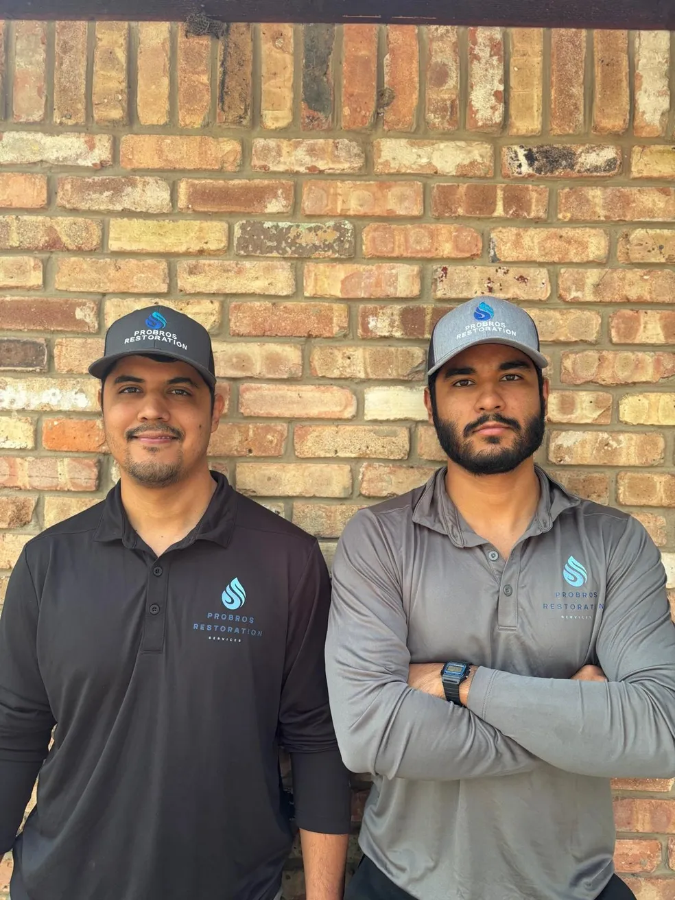
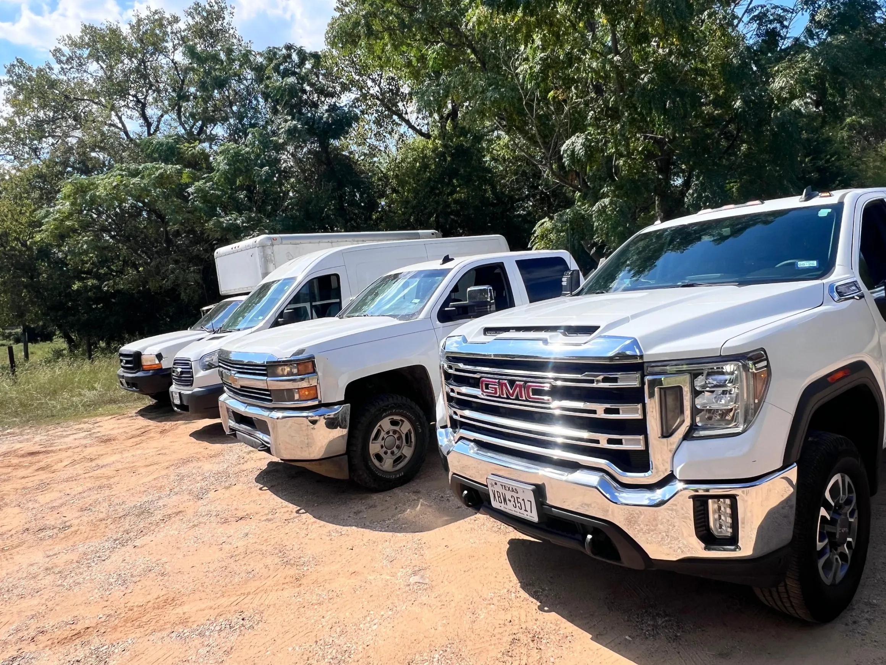
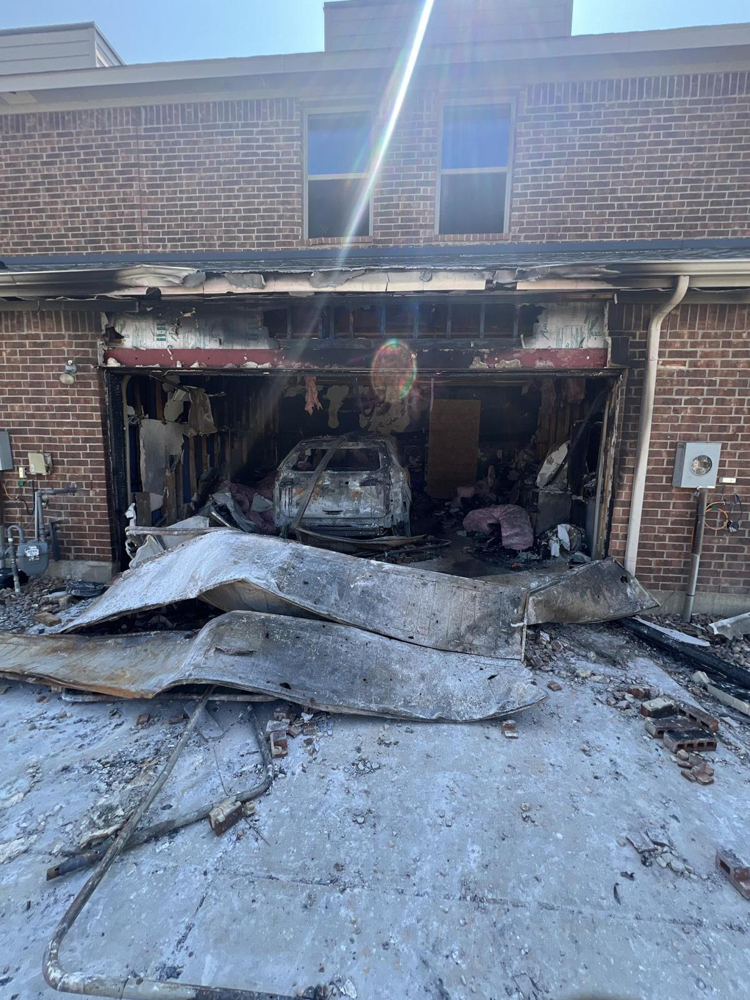
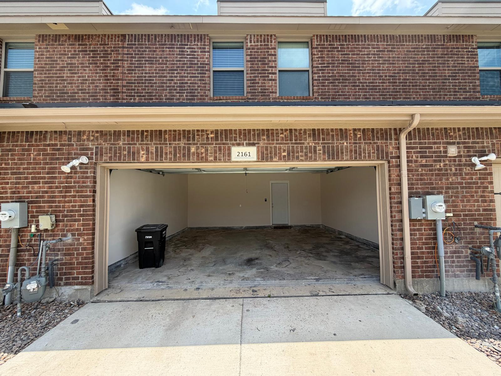
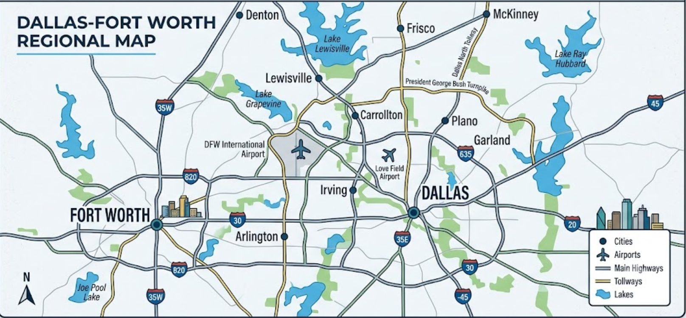

Reconstruction
Drywall, flooring, paint and rebuild. We restore the structure completely — not just dry it out and leave.
When disaster hits your home or business, every minute counts. Pro Bros Restoration is on call around the clock across Dallas–Fort Worth — fast mitigation, full restoration, and we handle the insurance paperwork for you.

From the first water extraction to the final coat of paint, one team handles your whole claim — so you only make one call.
Burst pipes, floods and leaks. Rapid extraction, structural drying and moisture monitoring to stop damage in its tracks.
Learn moreSoot removal, odor neutralization and structural cleanup to bring fire-damaged property back to pre-loss condition.
Learn moreContainment, safe removal and treatment of mold at the source — with air-quality testing to confirm the job's done right.
Learn moreWind, hail and flooding response. Emergency board-up, tarping and full cleanup to secure your property fast.
Learn moreSafe, sanitary removal of contaminated water and waste, full disinfection and deodorizing of affected areas.
Learn moreDrywall, flooring, paint and rebuild. We restore the structure completely — not just dry it out and leave.

We're a locally owned crew that treats your property like our own. No call centers, no runaround — just certified technicians and straight answers when you need them most.
A clear, proven process that gets your property dry, safe and rebuilt — with you informed at every stage.
Reach a live person 24/7. We dispatch the nearest crew immediately and arrive in about an hour.
We document the damage, identify the source and walk you through a clear plan and estimate.
Water extraction, structural drying and sanitizing to prevent mold and further loss.
Repairs, reconstruction and a final walkthrough — back to pre-loss condition or better.
Drag the slider to see how we take a damaged property back to move-in ready. Every job is documented before, during and after for your records and your insurer.


Filing a claim is stressful enough. We document everything, communicate with your adjuster and bill your carrier directly — so you can focus on your family, not paperwork.
"A pipe burst at 2am and they were at my door within the hour. Professional, calm and they handled the entire insurance claim for me. Lifesavers."
"After storm flooding I expected a nightmare. Pro Bros dried everything out fast and rebuilt the rooms better than before. Couldn't recommend them more."
"Honest pricing and no surprises. They explained every step and kept me updated daily. You can tell this is a real family-run crew that cares."
Locally based and fast to respond. If you're in the metroplex, we can be at your door — usually within the hour.

Quick answers to what homeowners ask us most. Still unsure? Call us — we're happy to help.
We answer the phone live 24/7 and dispatch the nearest crew immediately. Across Dallas–Fort Worth, our average on-site arrival is about 60 minutes for emergencies.
Yes. We work with all major insurance carriers, document everything your adjuster needs, and bill your insurance directly so you're not stuck fronting the cost.
Absolutely. Pro Bros Restoration is fully licensed and insured, and our technicians are IICRC-certified in water, fire and mold restoration.
Yes. We provide a free, no-obligation inspection and estimate so you understand the scope and cost before any work begins.
Water, fire and smoke, storm, mold, sewage and biohazard cleanup — plus full reconstruction. One team takes your property from emergency response all the way through rebuild.
Tell us what happened and we'll call you right back. For active emergencies, please call — we answer 24/7.
Thanks — a Pro Bros specialist will call you shortly. For an active emergency, call (469) 585-5519 now.
Call now and talk to a real person — 24 hours a day, 7 days a week.